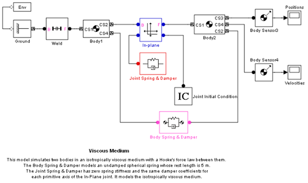

Viscous Medium
Two bodies connected by a spring in a viscous medium.
This model simulates two bodies in an isotropically viscous medium with a Hooke's force law between them. The Body Spring & Damper models an undamped spherical spring whose rest length is 5 m. The Joint Spring & Damper has zero spring stiffness and the same damper coefficients for each primitive axis of the In-Plane joint. It models the isotropically viscous medium.
